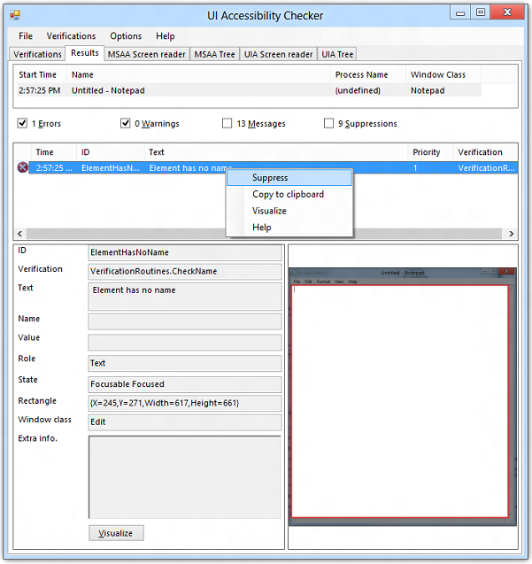
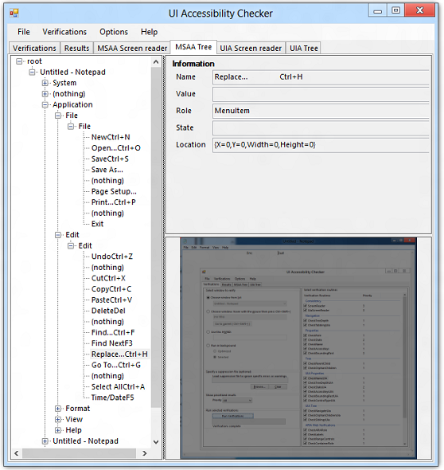

This topic describes the elements that make up the AccChecker GUI.
AccChecker starts with the default view of the Verifications tab:
The Verifications tab contains the following components.
Verification target selector Offers the following options for selecting a target application or control.
Verification routines checklist Provides the ability to select the desired verification routine to be performed against an application or control. See Verification Routines for more information.
Error and warning suppression file selector Suppression files are generated from the verification Results tab. By right-clicking an error or warning message and selecting Suppress from the context menu, a flag is set for that message. If the Suppressions check box is checked, suppressed entries appear in the list. A suppressed entry can be unsuppressed by using the same context menu used to suppress it.
A suppression file is saved in XML format by selecting Save Suppression from the File menu. This file is consumed on subsequent verification runs where the messages will be hidden. To remove the suppression file, click Clear. For information on specific messages, see Verification Log Messages. Use Save Log from the File menu to save the entire list as a log file in XML or as a formatted text file.

The following example shows the content of a suppression file generated by running the Properties verifications on the Windows Firewall control panel application. The error with an ID of "ElementHasNoName" was chosen for suppression in this example.
<?xml version="1.0" encoding="utf-8"?><ArrayOfLogEvent xmlns:xsi="https://www.w3.org/2001/XMLSchema-instance" xmlns:xsd="https://www.w3.org/2001/XMLSchema">
<LogEvent>
<EventID>ElementHasNoName</EventID>
<Text>Element has no name</Text>
<ParentChain>Windows Firewall.Windows Firewall</ParentChain>
<VerificationRoutine>VerificationRoutines.CheckName</VerificationRoutine>
<Classname>ATL:BUTTON</Classname>
<AccName />
<AccRole>PushButton</AccRole>
</LogEvent>
</ArrayOfLogEvent>
Show prioritized results Offers the following options for filtering the verification results by priority.
Run selected verifications Provides the Run Verifications button for starting the verification process. While verifications are running, the button changes to Cancel Verifications and can be used to stop the verifications after the current one completes.
The Results tab is populated after the selected verification tasks are complete. It consists of the following components.
Right-clicking on a message exposes a context menu with the following items.
The MSAA Screen reader and the UIA Screen reader tabs are similar. Both display a transcript of elements encountered in a simulated traversal of the verification target by a screen reader, except that one shows the MSAA implementation, and the other shows the UIA implemention.
Elements are navigated and logged just as a screen reader would read them. The information presented on this tab is essential to confirm that only useful and relevant information is being announced. For example, a normal-sounding control name such as "MenuItem Edit" or "PushButton Close" is acceptable; however, a control name that doesn't make sense, such as "CPNavPanel22" or "DefaultValue1", is not acceptable. The Visualize button, causes AccChecker to switch to the MSAA Tree or UIA Tree tab. If an element is highlighted on the Screen Reader tab, the corresponding element is highlighted on the MSAA Tree or UIA Tree tab.
The ScreenReader verification routine under Consistence must be selected in the Verifications tab for the MSAA Screen reader tab to be displayed. Similarly, the UiaScreenReader verification routine must be selected for the UIA Screen reader tab to be displayed.
The following screen shot shows the UIA Screen reader tab with a sample verification of Notepad.

Running any verification routine causes AccChecker to compile all visible elements in the verification target and display them hierarchically on the MSAA Tree tab and the UIA Tree tab. The following screen shot shows the MSAA Tree tab with the hierarchy of elements for Notepad.

| Menu | Command | Description |
|---|---|---|
| File${REMOVE}$ | Open | Provides the following options.Verifications DLL Opens a verification DLL. Native AccChecker verifications are encapsulated in a standalone DLL (VerificationRoutines.dll). This design allows test teams to create their own set of verifications based on the UI platform being tested.Log file Lets you choose a verification log file to open. |
| Automatically load available verifications | Automatically loads all available AccChecker verifications. | |
| Save Log | Save the verification log as XML or as plain text. Plain text is more readable. | |
| Save Suppression | Save the suppression log as XML. This file specifies the verification messages to ignore in regression testing. | |
| Exit | Closes the AccChecker tool. | |
| Verifications${REMOVE}$ | Run Now | Run the verification routines as specified for the chosen verification target. |
| Enable All | Check all verification routine check boxes. | |
| Disable All | Uncheck all verification routine check boxes. | |
| Options | Always On Top | Make AccChecker the topmost window in the z-order. |
| Help${REMOVE}$ | Help | Display help information. |
| About | Display the AccChecker version and an email address for contacting Microsoft about AccChecker. |